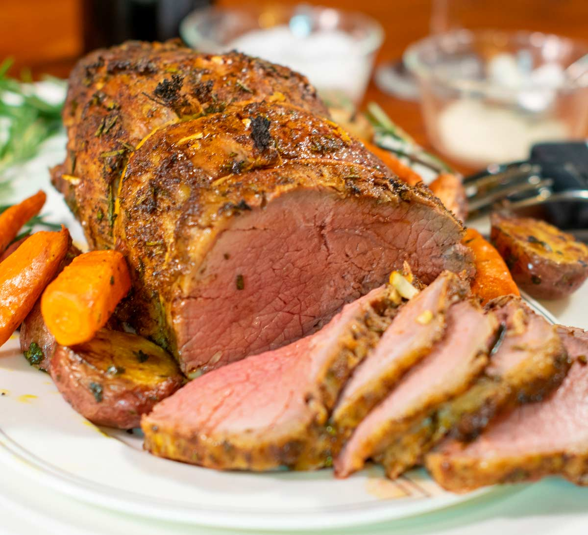

Mjölnir's Roast: Odin's Legendary Beef Feast
Mjölnir's Roast, a legendary cut of beef, is a testament to strength and
valor. Marinated in herbs from the realms, infused with the fire of the
cosmos,
and roasted to perfection, this dish embodies the might of the thunder god
himself. Each tender slice tells a tale of battles won and challenges
embraced,
a feast worthy of heroes and the Allfather's blessing.
Ingredients
- Prime cut of beef, chosen with the wisdom of a seer
- Ancient herbs from the realms of the Norse gods
- Ancient runes for flavor and protection
- Garlic cloves, harvested under the light of a full moon
- Black pepper, ground by the fire giants of Muspelheim
- Sea salt, collected from the waves of the Nine Realms
- Mead of the gods, for a divine marinade
- Wood from Yggdrasil, the World Tree, for the sacred fire
Steps
- Prepare the beef with reverence, for it is the centerpiece of the feast.
- Rub the ancient herbs and runes onto the meat, invoking their power and flavor.
- Crush garlic cloves with the strength of a warrior and sprinkle them over the beef.
- Season with black pepper and sea salt, honoring the fire giants and the Nine Realms.
- Marinate the beef in the mead of the gods, infusing it with divine essence.
- Light the sacred fire with wood from Yggdrasil, the World Tree, to honor the realms.
- Roast the beef to perfection, capturing the essence of the cosmos in each bite.
- Serve Odin's Legendary Roast Beef, a feast worthy of heroes and the gods themselves.